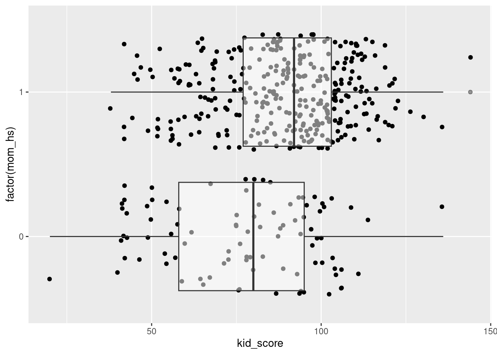

5 Linear regression model with a single categorical predictor
Variables description:
kid_score: (numeric) Kid’s IQ score.
mom_hs (binary): 1 if the mother has finished high school, 0 otherwise.
Two groups of kids: the ones whose mother had a high school degree (mom_hs = 1) and the rest (mom_hs = 0).
Question: are this two groups different with respect to IQ (as measured by kid_score).
Research hypothesis: children of mothers without a high school degree have lower IQ on average compared to children of mothers with a high school degree.
kids %>%## Group the data according to the educational status of the mothersgroup_by(mom_hs) %>%## Compute the average IQ score in each groupsummarise(## Count the number of rows (children) in each groupn =n(),## Compute the average IQ score for each groupaverage_IQ =mean(kid_score) )
# A tibble: 2 × 3
mom_hs n average_IQ
<dbl> <int> <dbl>
1 0 93 77.5
2 1 341 89.3
kids %>%ggplot(aes(y =factor(mom_hs),x = kid_score, ) ) +geom_point(## Add some noise to each observation so that we can ## see the collection of dots. Without this noise## all dots would lie on two straight linesposition ="jitter" ) +geom_boxplot(alpha =0.5)

Formulated as a linear regression model:
\[
i = 1,\ldots, n = 434\\
y_i: \text{Kid IQ score} \\
x_i \in \{0, 1\}
\]
We want to create a simulation where we select 2000 samples of children from a given model. Fix the following code so that there are 2000 samples (currently there are 2) and so that there are exactly as many children with \(mom_hs = 1\) and \(mom_hs = 0\) as in the original data kids.
## Fix the random numbers generator so that you can reproduce your resultsset.seed(123)sim_df <-expand_grid(R =1:200,mom_hs =rep(c(0, 1), c(93, 341)))sim_df <- sim_df %>%mutate(mu =77.548+11.771* mom_hs,kid_score =rnorm(n =n(), mean = mu, sd =19.85) )
Select the first simulated sample and find the OLS coefficient estimates using lm.
## Estimate the OLS coefficients with the data from the first sample of childrensim_sample_1 <- sim_df %>%filter(R ==1)lm(kid_score ~1+ mom_hs, data = sim_sample_1)
The following code computes the OLS estimates for each of the samples.
sim_coeff <- sim_df %>%group_by(R) %>%## The tidy function reformats the output of lm so that it can fit in a data framedo(tidy(lm(kid_score ~ mom_hs, data = .))) %>%select(R, term, estimate, std.error, statistic)
The data set sim_coeff now contains estimated coefficients (\(\hat{\alpha}\) and \(\hat{\beta}\)) for every sample. Check the first two rows and compare it to your results for the first estimated sample. To plot the distribution of \(\hat{\beta}_1\) (the slope coefficients) we filter the data set so that we keep only the raw where term == "mom_hs" (i.e our estimates for \(\beta\)).
Copy the code above and adapt it to show the distribution of the intercept coefficients.
# ???
5.2 Summary of the lm output
summary(fit)
Call:
lm(formula = kid_score ~ 1 + mom_hs, data = kids)
Residuals:
Min 1Q Median 3Q Max
-57.55 -13.32 2.68 14.68 58.45
Coefficients:
Estimate Std. Error t value Pr(>|t|)
(Intercept) 77.548 2.059 37.670 < 2e-16 ***
mom_hs 11.771 2.322 5.069 5.96e-07 ***
---
Signif. codes: 0 '***' 0.001 '**' 0.01 '*' 0.05 '.' 0.1 ' ' 1
Residual standard error: 19.85 on 432 degrees of freedom
Multiple R-squared: 0.05613, Adjusted R-squared: 0.05394
F-statistic: 25.69 on 1 and 432 DF, p-value: 5.957e-07
Standard error: this is an estimate of the standard deviation of the estimator for the coefficient based on assumptions about the error term (\(u_i\)) in the model.
The standard deviation of \(\hat{\beta}_1\), computed using the simulated samples:
When is the value of the t-statistic close to zero? 1. The estimate is close to the value under the null hypothesis. 2. For high values of the standard error
slopes %>%ggplot(aes(x = t_statistic)) +geom_point(aes(y =0),position ="jitter",size =1/2,alpha =0.5 ) +geom_boxplot(alpha =0.5) +labs(x ="Value of the t-statistic",title ="Distribution of t-statistic under a true null hypothesis beta_1 = 11.77 (2000 samples)",y ="" ) +geom_density(color ="steelblue") +geom_vline(xintercept =0, color ="red") +geom_vline(xintercept =c(-2, 2), color ="steelblue", lty =2) +geom_vline(xintercept =c(-3, 3), color ="firebrick", lty =2) +scale_x_continuous(breaks =c(-3, -2, 0, 2, 3))
# xlim(c(0, 21))
The real coefficient equals 11.77 (it is known, because we choose it for the simulation).
Lets assume a rule that we reject the null hypothesis \(H_0: \beta_1 = 0\) vs. \(H_1: \beta_1 \neq 0\) if the value of the t-statistic is less than -2 or greater than +2.
In how many samples will we wrongly reject the null hypothesis using this rule?
\[
\text{t-statistic} = \frac{\hat{\beta}_1 - 0}{SE(\hat{\beta}_1)}
\] The value of the t-statistic is small when the estimate for the coefficient is close to the value under the null hypothesis. The value of the t-statistic will be small, if the standard error of the estimator is high.
\[
t = \frac{11.77 - 0}{2.322} = 5.069
\]
Compute the value of the t-statistic for all samples in the simulation (and compare it to the value of the statistic column in the sim_coef dataset)
\[
\text{t-statistic} \underbrace{\sim}_{H_0} t(\text{df} = n - p)
\]
The t-statistic follow a t-distribution with \(n - p\) degrees of freedom (parameter of the distribution), where \(n\) is the number of observations in the linear model (in our example \(n = 434\) kids) and \(p\) is the number of coefficients in the linear equation. In our linear regression model the number of coefficients in \(p = 2\): the intercept \(\beta_0\), and the slope coefficient \(\beta_1\).
6.1 Probabilities and quantiles of the t-distribution
A convention is to use a 5% error probability of rejecting a true null hypothesis, so we use the quantiles of the t-distribution to derive critical values as follows:
## Lower critical value: the 0.025 quantile of the t-distributionqt(0.025, df =434-2)
[1] -1.965471
## Upper critical value: the 0.975 quantile of the t-distribution## lower.tail = FALSE instructs qt to calculateqt(0.025, df =434-2, lower.tail =FALSE)